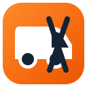

Truck-aware routing
Routes calculated around height, weight, length, width, axles, trailer, and hazmat profile.

SEMI-TRAXSMARTER ROUTES. SAFER DELIVERIES. Join the pilot →● BUILT FOR COMMERCIAL TRUCKING
Professional truck navigation that helps drivers plan safer, compliant, and more efficient routes across the United States, Canada, and Mexico.

NORTH AMERICA COVERAGE
Semi-Trax focuses on vehicle-aware truck navigation across the United States, Canada, and Mexico.
BUILT FOR THE LONG HAUL
NAVIGATION, RE-ENGINEERED
Semi-Trax starts with the truck, then builds the route. Every guidance decision is shaped around professional drivers and the vehicles they operate.
Routes calculated around height, weight, length, width, axles, trailer, and hazmat profile.
Clear turn-by-turn directions, lane guidance, route previews, voice prompts, and automatic rerouting.
Traffic-aware ETAs, incidents, closures, and relevant warnings when licensed data is available.
Keep navigating through low-signal areas with downloadable U.S., Canada, and Mexico map coverage.
THE COMPLETE JOURNEY
MAXIMUM VEHICLE PROFILE
✓ Multi-trailer restriction routing
✓ Bridge clearance and weight checks
✓ State and approved-network rules
FOR OWNER-OPERATORS AND FLEETS
THE NEXT MILE STARTS HERE
Semi-Trax is currently in development and commercial-provider evaluation.